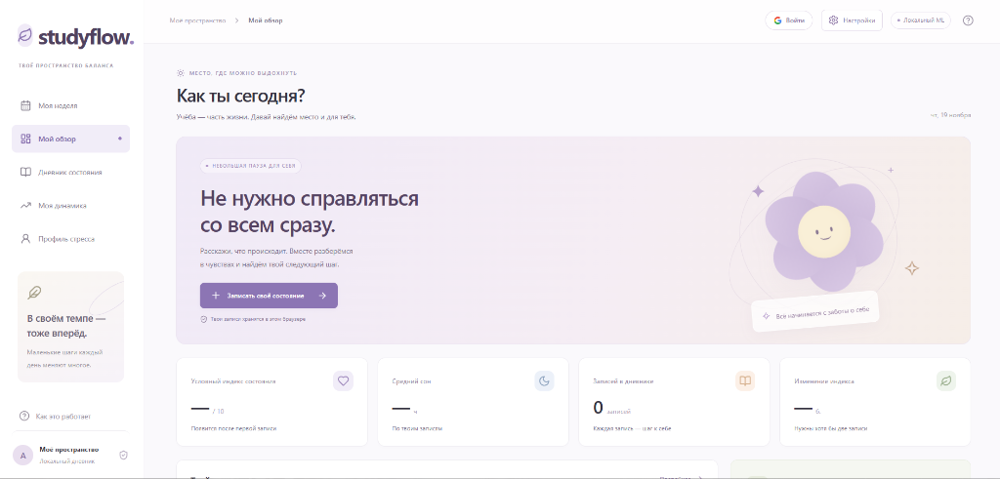
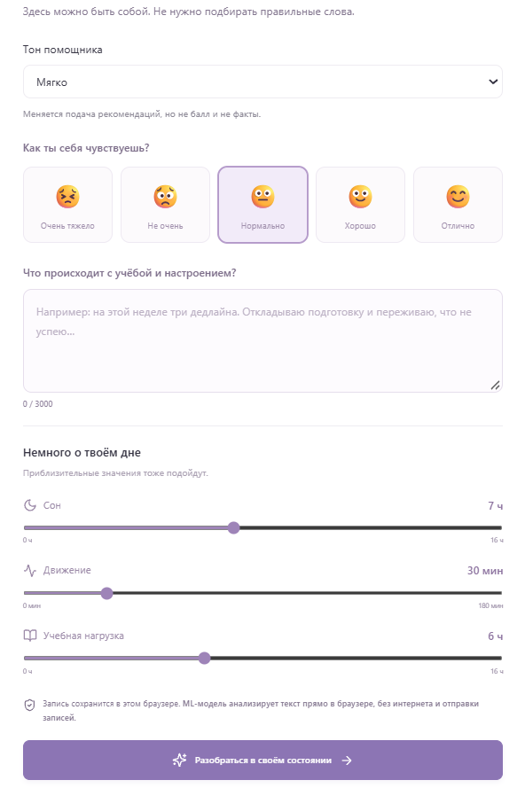
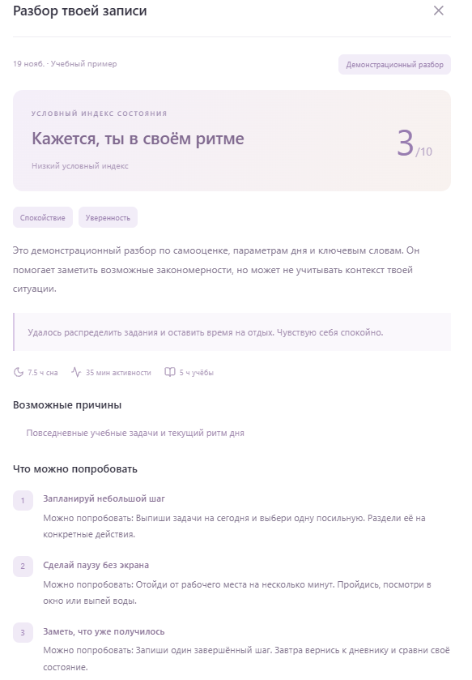
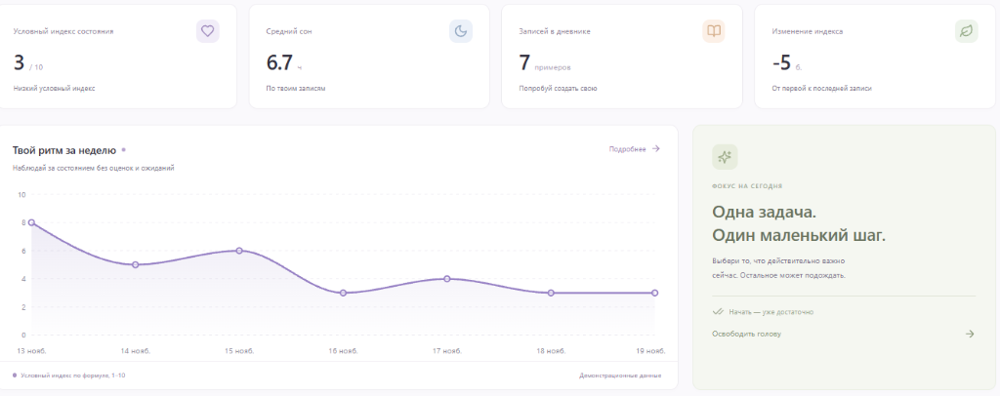
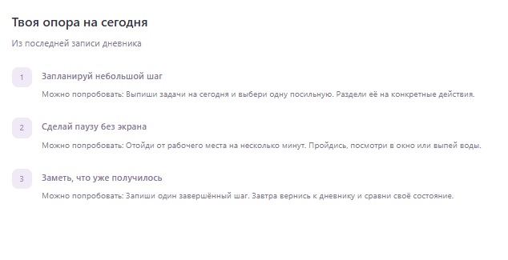

StudyFlow — учёба в твоём ритме
Инновационный сервис психологической гигиены и предупреждения студенческого выгорания на основе локального машинного обучения.
Проблема
До 68% студентов сталкиваются с пиковым стрессом, хаотичным сном и прокрастинацией без своевременной поддержки.
Решение StudyFlow
Ежедневный 60-секундный чекап, анализ скрытых стрессоров на устройстве студента и тактика микро-шагов.
Бескомпромиссная приватность
Личные переживания анализируются непосредственно в браузере и не передаются во внешние публичные нейросети.

Рис. 1: Эстетичный, снижающий тревожность интерфейс с приветствием и быстрым доступом к записи состояния.
Мультимодальный ввод: экспресс-фиксация самочувствия
Форма разработана с учётом когнитивной нагрузки истощённого студента: заполнение не требует усилий и занимает до двух минут.
Интуитивные визуальные смайлы от «Очень тяжело» до «Отлично» для мгновенной самоидентификации.
Текстовое поле на 3000 символов для описания дедлайнов, эмоций и трудностей без цензуры.
Точные слайдеры: часы сна (0–16 ч), физическая активность (0–180 мин) и время на учёбу (0–16 ч).
Выбор характера обратной связи: «Мягко» (эмпатия), «По делу» (структура) или «Как тренер» (мотивация).

Локальная ML-модель: классификация и расчёт индекса
Модель работает непосредственно в JS-рантайме браузера студента. Обученные веса включены в сборку приложения: серверные затраты равны нулю.
Многоязычная n-gram токенизация (RU / KK / EN) с выделением префиксов и пар лексем для устойчивости к опечаткам и разговорной речи.
Взвешенная формула объединяет субъективную оценку, дефицит сна (<7 ч), превышение учебных часов (>8 ч), нехватку активности и семантические маркеры.

Аналитический дашборд: видимый прогресс
Главная ценность для студента — увидеть, что ситуация меняется к лучшему, а тревожность поддаётся контролю при нормализации режима.
Сглаженный график за 7/14/30 дней наглядно отражает спад напряжения (на скриншоте: снижение с 8 до 3 баллов за неделю).
Средний сон 6.7 ч позволяет студенту осознать прямую связь между отдыхом и работоспособностью.
Антидот против паралича решений: акцент на одной посильной задаче освобождает оперативную память мышления.

Рис. 4: Наглядная визуализация снижения индекса стресса на 5 пунктов при регулярном ведении дневника.
«Твоя опора на сегодня»: персональные рекомендации
В отличие от абстрактных советов, алгоритм формирует 3 прикладных шага, адаптированных под текущий балл нагрузки и выбранный тон.
Запланируй небольшой шаг (Micro-stepping)
Декомпозиция пугающей учебной задачи на элементарное 15-минутное действие снимает страх начала.
Сделай паузу без экрана (Digital Detox)
Короткая смена обстановки и отдых для зрительной коры нормализуют уровень дофамина и снижают утомление.
Заметь, что уже получилось (Positive Reinforcement)
Фиксация даже минимального завершённого действия формирует чувство академической состоятельности.

Архитектура сервиса и стек технологий
Гибридный технологический стек, сочетающий клиентскую автономность и надёжный облачный бэкенд enterprise-уровня.
- ⚡ Next.js 16 (App Router)
- 📘 TypeScript & React 19
- 🎨 Tailwind CSS (Light UI)
- 🧠 In-Browser ML (Naive Bayes)
- 📊 Recharts + Zustand
- 🦀 Rust / Axum API microservice
- 🐘 PostgreSQL (Render Cloud)
- 🔄 Двусторонняя синхронизация
- 🚀 Zero-downtime deploy
- 📦 Full CI/CD via Render
- 🔐 Google OAuth 2.0
- 🔑 HMAC-SHA256 токены
- 🛡️ HttpOnly / SameSite куки
- 👑 Ролевая модель (Admin)
- 🌐 Мультиязычность (RU/KK/EN)
🚀 Потенциал внедрения для экспертов
Интеграция с университетскими LMS: возможность встраивания в Canvas, Moodle или электронные деканаты без раскрытия личных дневников.
Анонимизированная аналитика факультета: предиктивное выявление недель максимального стресса для оптимизации расписания дедлайнов.
Нулевая стоимость масштабирования: обработка текста на клиентских устройствах позволяет обслуживать десятки тысяч студентов без серверных затрат на LLM-токены.
Репозиторий проекта полностью протестирован, развёрнут и готов к демонстрации.